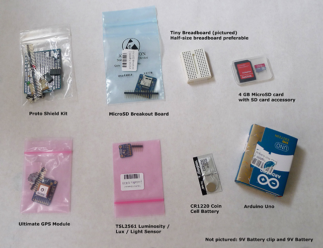
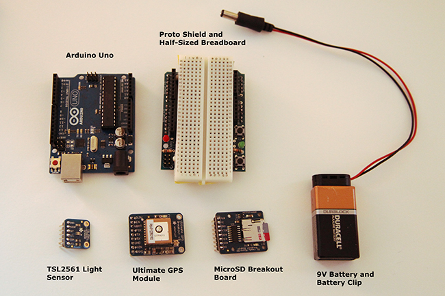
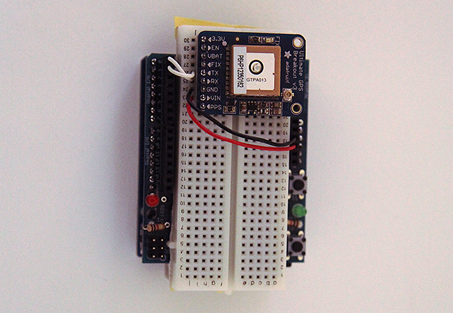
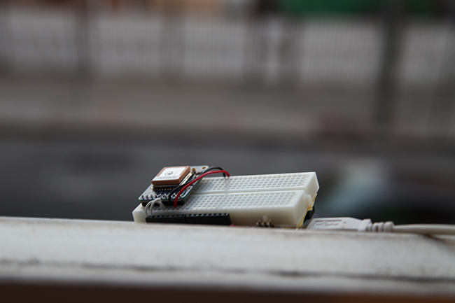
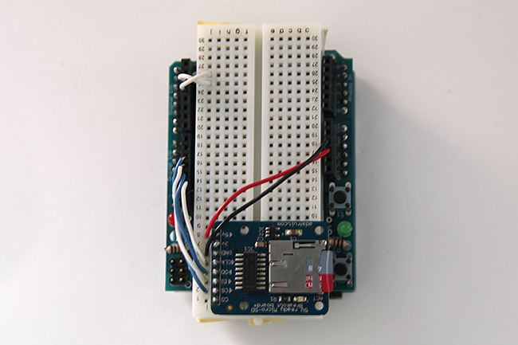
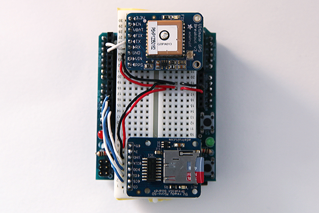
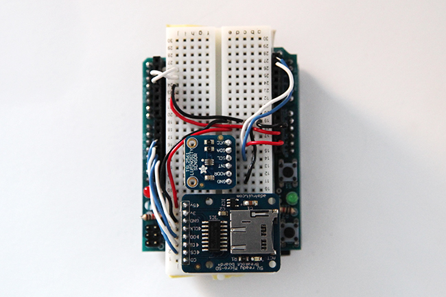
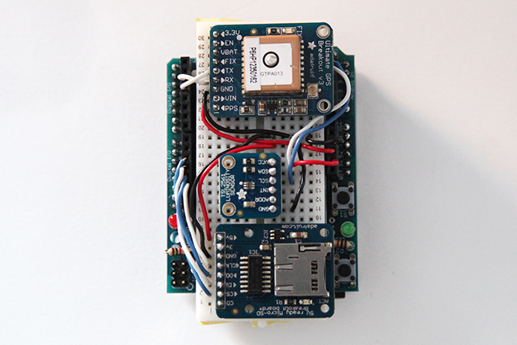

Data Collection Device
Project maintained by darknessmap Hosted on GitHub Pages — Theme by mattgraham
Darkness Map Data Collection Device
The Darkness Map encompasses both data collection and visualization of nighttime light levels. You can add to the map by downloading the app for iPhone or Android, but you can also contribute data by creating your own data collection device. This tutorial will cover how to build an Arduino powered data logger with a light intensity sensor, and how to add the data you collect to darknessmap.com. Since the sensor modules are attached to the Arduino on a breadboard, it's fairly simple to swap out the light sensor for a different sensor of your choosing. You can log data about temperature, air quality, noise, and many other environmental factors to use in your own projects.
Parts You Need
The Data Collection Device uses a number of parts available from Adafruit. Lady Ada (Limor Fried) has created many useful electronic kits and written many helpful tutorials that makes putting together your own data logger quite easy. You will need the following parts:
- Arduino Uno - available from a variety of online resellers, and even your local Radioshack.
- CR1220 Coin Cell Battery - also available at drug stores, other online resellers
- MicroSD card- you can also repurpose one from an old mobile phone
- 9V Battery

The parts for each device cost about $90, not including the Arduino Uno.
Solder Your Breakout Boards and Kits
First things first, you'll want to put together the Proto Shield kit. Adafruit has a great step by step tutorial on how to attach and solder all the necessary parts. When it comes time to attach the last parts, don't, as we'll be putting the half-sized breadboard on top of the protoshield.
Next, attach and solder the header pins to the GPS module, MicroSD breakout board, and the TSL2561 light sensor. You may want to tape them if they aren't staying put as you solder. To attach the coin cell battery holder to the back of the Ultimate GPS module, heat the pads on either side of the battery holder with the tip of your soldering iron. Once they're hot enough, let solder flow on top and hold the battery holder in place until the solder hardens.
After you have soldered all your header pins, you are ready to start connecting the modules together. Follow the steps in the Proto Shield tutorial, and break off the sides of the half-sized breadboard. Then peel the adhesive backing off the back of the breadboard and attach it to the top of the Proto Shield.

Once you have all the modules put together, it's time to connect the wiring.
Set up the GPS Module
First, you'll want to set up your Ultimate GPS Module and make sure it's working properly. In order for the GPS to get a signal, you'll want to work near a window (possibly even outside), so that you can stick your Arduino and GPS module on a window ledge for it to get a reading. As per the Adafruit tutorial, you can initially wire it so that it bypasses the Arduino's ATMega chip, and communicates directly with your computer's USB serial port. In order to do this, just wire the GPS module's +5V pin to the Arduino's +5V pin, Ground to the Arduino's Ground pin, RX to pin0 and TX to pin1. Next upload a blank sketch, where both the void setup() and void loop() functions are empty. Open the serial monitor in Arduino and you should start seeing a bunch of characters start to spit out. Make sure the serial baud rate is set to 9600. This is raw GPS NMEA code, which you can read more about here.

Find the line that starts with $GPRMC. The first section is GMT (Greenwich Mean Time), next is the letter A which means the GPS module is Active (as opposed to V which would be void). Then next four values are the Geolocation data. In Brooklyn, NY my location data reads: 4041.3198,N,07357.5915,W. This translates to (Latitude 40 degrees, 41.3198 decimal minutes North and Longitude 73 degrees, 57.5915 decimal minutes West). To check this against google maps, you'd covert it into degrees of latitude and longitude that google understands. I typed in +40 41.3198 ,- 73 57.5915, and it was able to find the correct location. If you're getting readings with lots of zeros, try placing the GPS further on the window ledge.

Next, you'll want to wire the GPS to your Arduino. Change the wiring so that the GPS Module's RX pin is connected to Arduino pin2, and it's TX pin is connected to pin3. Adafruit has a GPS library, but we'll be using the TinyGPS library by Mikal Hart. Download the latest version of the library and put the folder inside Documents --> Arduino --> libraries. Make sure it's called TinyGPS. Open the simple test example sketch. Notice how the serial monitor is set to a baud rate of 115200. Also, where it says
ss.begin(4800);ss.begin(9600);Once the sketch is uploaded, open your serial monitor. If you see a bunch of weird characters, change the baud rate to 115200. Then you should be able to see the data being printed to the serial monitor. If you're not seeing any GPS data, you may have to put your module on the window ledge again since it's most likely not receiving any new GPS signals.
If your GPS module is working correctly and you've been able to run the TinyGPS library code, the next step is adding the MicroSD breakout board to the Arduino, and see if we can save our GPS data to a text file on the MicroSD card.
Set up the MicroSD Breakout Board
In order to see if the SD card is formatted correctly, and if the MicroSD card breakout board is setup properly, you'll want to take the GPS module off your breadboard for now and work with the MicroSD card breakout board on its own. Feel free to leave your wires in the breadboard so you can remember to leave space for the different modules. For our purposes, wire the MicroSD card like this:

Now you'll want to open an example from the SD card library, which comes with Arduino. We'll be checking whether our MicroSD breakout board is wired up properly, and if the SD card is formatted correctly using the CardInfo sketch. Before you upload the code to the Arduino, make sure you change one line of code. The chipSelect pin should be set to 10, not 4.
const int chipSelect = 10;Upload the code to the Arduino and turn on the serial monitor. You should see something like this:
Insert picture of serial monitor and Card Info code??
If your serial monitor gives you a message that it can't initialize the card, try reformatting it to FAT32 or FAT16 using your Disk Utility application. If you have further problems, follow the steps in the Adafruit tutorial.
Next let's see if we can write files to our SD card. Open the Files example from the SD library. Make sure to change chipSelect to equal 10, not 4. Upload the code and turn on the serial monitor. If it successfully creates and removes the example.txt file then congratulations, you're able to write to an SD card.
Next we want to see if we can get the Arduino to save our GPS readings to the SD card. Disconnect your Arduino from the computer. Put the GPS module back in place. In order to connect both the GPS and MicroSD card breakout board to 5V and Ground on the Arduino, we'll want to bring the power and ground to the breadboard, and then connect it to each module.

Now, upload the following code to your Arduino. It's best if the Arduino is back out on your window ledge so you can get a GPS reading. You can check to see what's happening by opening the serial monitor, but make sure to change the baud rate to 115200 or else the characters won't make much sense. You should be seeing rows of three values. First the longitude coordinate, next the latitude coordinate, and finally the unix timestamp.
#include "Wire.h"
#include "SD.h"
#include "SoftwareSerial.h"
#include "TinyGPS.h"
#include "RTClib.h"
const int chipSelect = 10;
RTC_Millis RTC;
File dataFile;
TinyGPS gps;
SoftwareSerial ss(3, 4);
void setup()
{
Serial.begin(115200);
Serial.print("Initializing SD card...");
ss.begin(9600);
pinMode(chipSelect, OUTPUT);
RTC.adjust(DateTime(__DATE__, __TIME__));
// see if the card is present and can be initialized:
if (!SD.begin(chipSelect)) {
Serial.println("Card failed, or not present");
// don't do anything more:
while (1) ;
}
Serial.println("card initialized.");
// Open up the file we're going to log to!
dataFile = SD.open("GPStest.txt", FILE_WRITE);
if (! dataFile) {
Serial.println("error opening GPStest.txt");
// Wait forever since we cant write data
while (1) ;
}
}
void loop()
{
DateTime now = RTC.now();
bool newData = false;
for (unsigned long start = millis(); millis() - start < 1000;)
{
while (ss.available())
{
char c = ss.read();
// Serial.write(c); // uncomment this line if you want to see the GPS data flowing
if (gps.encode(c)) // Did a new valid sentence come in?
newData = true;
}
}
if (newData)
{
float flat, flon;
unsigned long age;
int year;
byte month, day, hour, minute, second, hundredths;
gps.f_get_position(&flat, &flon, &age);
gps.crack_datetime(&year, &month, &day, &hour, &minute, &second, &hundredths, &age);
char sz[32];
sprintf(sz, "%02d/%02d/%02d, %02d:%02d:%02d, ",
month, day, year, hour, minute, second);
Serial.print("");
Serial.print(flon == TinyGPS::GPS_INVALID_F_ANGLE ? 0.0 : flon, 6);
Serial.print(", ");
Serial.print(flat == TinyGPS::GPS_INVALID_F_ANGLE ? 0.0 : flat, 6);
Serial.print(", ");
Serial.println(now.unixtime());
dataFile.print("");
dataFile.print(flon == TinyGPS::GPS_INVALID_F_ANGLE ? 0.0 : flon, 6);
dataFile.print(", ");
dataFile.print(flat == TinyGPS::GPS_INVALID_F_ANGLE ? 0.0 : flat, 6);
dataFile.print(", ");
dataFile.println(now.unixtime());
}
dataFile.flush();
delay(500);
}Now unplug your Arduino and eject the MicroSD card from the breakout board. Find the SD card adapter and insert it into your computer, either with a card reader or directly if you have an SD card slot. See if there is a text file called GPSTEST.TXT. If there is, yay! If not, then I'd try reformatting your card and trying to write to it again. Open the text file and make sure the data has been written. Sometimes the file gets created but no data gets saved, and if this is your case, check your wiring, and try following LadyAda's SD card tutorials.
Adding the Light Sensor
If you've been able to save GPS data to your SD card, the last step is adding our light sensor to the mix. Add the TSL2561 sensor to the breadboard. Wire it in the following way:

We'll be using the TSL2561 Arduino libray from Adafruit. You can download it here, unzip it, and put in the Arduino libraries folder. If Arduino is open restart it for the library to appear in the Examples dropdown choices. Open the example sketch and upload it to the Arduino. Press the serial monitor to make sure it's reading data. Wave your hand over the sensor to see if that changes the light values. Once you're satisfied that your sensor is working, upload the following code to the Arduino:
// Darkness Map Data Collection Device
// Genevieve Hoffman, 2012
// TinyGPS Library, by Mikal Hart, download here: http://arduiniana.org/libraries/tinygps/
// TSL2561 Library, by Ladyada (Limor Fried), download here: https://github.com/adafruit/TSL2561-Arduino-Library
// RTClib, by Ladyada (Limor Fried), download here: https://github.com/adafruit/RTClib
// RTClib originally developed by Jeelabs: https://github.com/jcw/rtclib
#include "Wire.h"
#include "TSL2561.h"
#include "SD.h"
#include "SoftwareSerial.h"
#include "TinyGPS.h"
#include "RTClib.h"
const int chipSelect = 10;
RTC_Millis RTC;
File dataFile;
int sensorPin = A0; // input pin from sensor
int lux = 0; // variable to store the value coming from sensor
TSL2561 lightSensor(TSL2561_ADDR_FLOAT);
TinyGPS gps;
SoftwareSerial ss(3, 4);
void setup()
{
Serial.begin(115200);
Serial.print("Initializing SD card...");
ss.begin(9600);
pinMode(chipSelect, OUTPUT);
RTC.adjust(DateTime(__DATE__, __TIME__));
// see if the card is present and can be initialized:
if (!SD.begin(chipSelect)) {
Serial.println("Card failed, or not present");
// don't do anything more:
while (1) ;
}
Serial.println("card initialized.");
// Open up the file we're going to log to!
dataFile = SD.open("Data5.txt", FILE_WRITE);
if (! dataFile) {
Serial.println("error opening datalog.txt");
// Wait forever since we cant write data
while (1) ;
}
lightSensor.begin();
if (lightSensor.begin()) {
Serial.println("Found sensor");
} else {
Serial.println("No sensor?");
while (1);
}
//lightSensor.setGain(TSL2561_GAIN_0X); // set no gain (for bright situtations)
lightSensor.setGain(TSL2561_GAIN_16X); // set 16x gain (for dim situations)
//lightSensor.setTiming(TSL2561_INTEGRATIONTIME_13MS); // shortest integration time (bright light)
//lightSensor.setTiming(TSL2561_INTEGRATIONTIME_101MS); // medium integration time (medium light)
lightSensor.setTiming(TSL2561_INTEGRATIONTIME_402MS); // longest integration time (dim light)
}
void loop() // run over and over again
{
DateTime now = RTC.now();
bool newData = false;
for (unsigned long start = millis(); millis() - start < 1000;)
{
while (ss.available())
{
char c = ss.read();
// Serial.write(c); // uncomment this line if you want to see the GPS data flowing
if (gps.encode(c)) // Did a new valid sentence come in?
newData = true;
}
// Read Light Sensor
uint32_t lum = lightSensor.getFullLuminosity();
uint16_t ir, full;
ir = lum >> 16;
full = lum & 0xFFFF;
lux = lightSensor.calculateLux(full, ir);
}
if (newData)
{
float flat, flon;
unsigned long age;
int year;
byte month, day, hour, minute, second, hundredths;
gps.f_get_position(&flat, &flon, &age);
gps.crack_datetime(&year, &month, &day, &hour, &minute, &second, &hundredths, &age);
char sz[32];
sprintf(sz, "%02d/%02d/%02d, %02d:%02d:%02d, ",
month, day, year, hour, minute, second);
Serial.print("");
Serial.print(flon == TinyGPS::GPS_INVALID_F_ANGLE ? 0.0 : flon, 6);
Serial.print(", ");
Serial.print(flat == TinyGPS::GPS_INVALID_F_ANGLE ? 0.0 : flat, 6);
Serial.print(", ");
Serial.print(sz); //prints out GMT time
Serial.print("unixtime: ");
Serial.print(now.unixtime());
Serial.print(", Lux: "); Serial.println(lux);
dataFile.print("");
dataFile.print(flon == TinyGPS::GPS_INVALID_F_ANGLE ? 0.0 : flon, 6);
dataFile.print(", ");
dataFile.print(flat == TinyGPS::GPS_INVALID_F_ANGLE ? 0.0 : flat, 6);
dataFile.print(", ");
dataFile.print(lux);
dataFile.print(", ");
dataFile.println(now.unixtime());
}
dataFile.flush();
delay(500);
}Since the Darkness Map project is about collecting light values at night, you'll want to configure your TSL2561 sensor for dim lighting situations. So, you'll want to turn on the line of code that says:
lightSensor.setGain(TSL2561_GAIN_16X); // set 16x gain (for dim situations)and
lightSensor.setTiming(TSL2561_INTEGRATIONTIME_402MS); // longest integration time (dim light)Feel free to change these settings if you decide to use the TSL2561 sensor for other purposes.
After the code is uploaded, start the serial monitor, making sure it's set to 115200 baud rate. If the monitor stops printing out any information after "Found sensor," then your Arduino probably isn't picking up any GPS signal, and you'll want to stick it back out on your window ledge. You should start seeing values for the longitude, latitude, and lux and timestamp coming into the serial monitor. Congratulations! You've made yourself a datalogger.
Since everything is breadboarded, feel free to swap out the TSL2561 for another sensor of your choice in order to make another GPS enabled datalogger. The possibilities are endless!
Troubleshooting
If you have trouble getting a GPS signal, or writing to the SD card, I'd recommend going through the Adafruit tutorials for the TSL2561 light sensor, the Ultimate GPS Module, and the MicroSD Breakout Board separately.
MicroSD breakout board tutorial
Ultimate GPS Module tutorial
TSL2561 Light Sensor tutorial